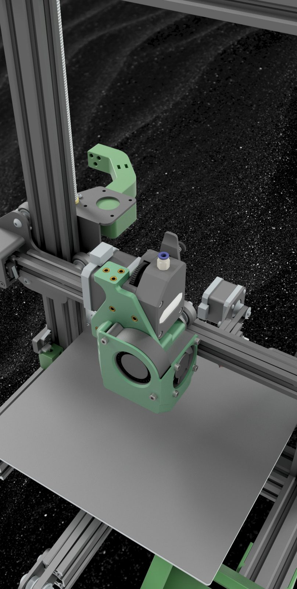
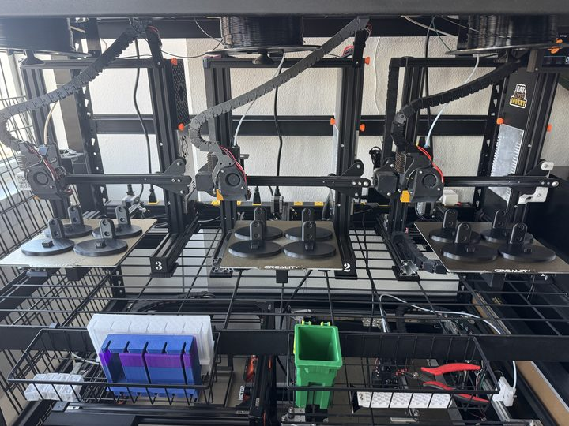
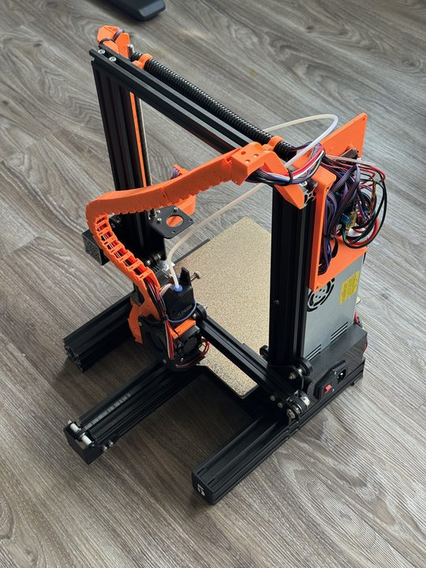
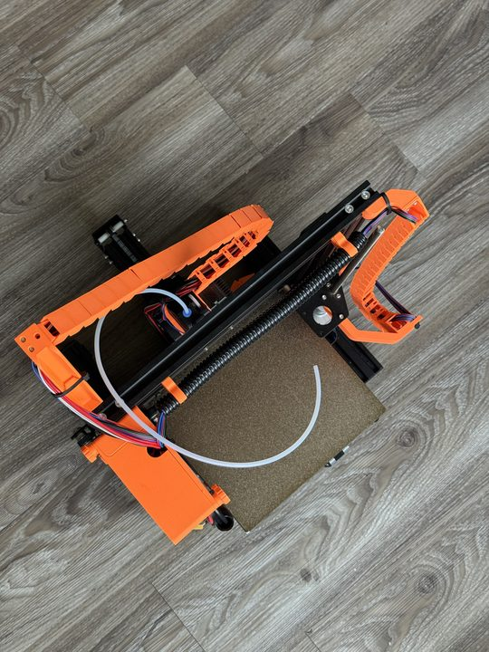
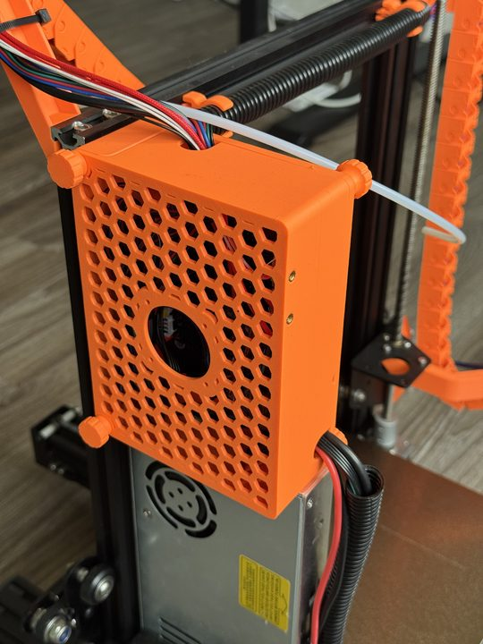

2023 – 2026
V-Labs Ender 3 & RRFarm
A conversion kit that makes the world's most common budget 3D printer far more reliable and about 3× faster, plus a web app for running my six-printer farm.
- Autodesk Inventor
- RepRapFirmware
- Python
- FastAPI
- Print farm
- Open source

The Creality Ender 3 is the most widely produced (and most often thrown away) 3D printer. It's cheap, but you lose a lot of time and filament fighting the first layer. This kit turns it into a reliable, fast, accurate machine running RepRapFirmware over Wi-Fi on a Fly E3 board, with no Raspberry Pi or Klipper needed. A complete conversion, including a used base printer from eBay, came to about $160. The Fly board runs firmware and the Wi-Fi web interface on one STM32 with an 80-line config and about $35 of electronics, and a converted machine moves at 600 mm/s on X/Y. It's open source, rated 4.5★ on Printables, and runs my six-printer farm, which prints products for Etsy as well as my own projects.


What changes from stock
- Printhead: a direct-drive dual-gear extruder that reuses the stock hotend and fan, a 5015 part-cooling fan and duct, and an inductive probe or BLTouch for mesh compensation.
- Bed: TPU springs and high-friction knobs that don't drift with vibration.
- Electronics: a Fly E3 board running RepRapFirmware, configured from the browser.
- Cable management: cable chains on X, Y and Z (also published separately), a board enclosure and cable trays.
- Filament runout sensor.
The repository ships the full Inventor project, print-ready STLs, SD-card-ready firmware packages for two boards, OrcaSlicer presets and a full bill of materials.


RRFarm: managing the fleet
A small Python web app (FastAPI) for running the farm:
- Dashboard with the live status of every printer
- Push macros or files to many printers at once
- Firmware updates from a versioned package. It checks the printer is idle and the package matches the board, uploads with CRC checks and retries, flashes the main and Wi-Fi firmware, waits for the reboot and confirms the new versions. Per-printer config is never overwritten.







